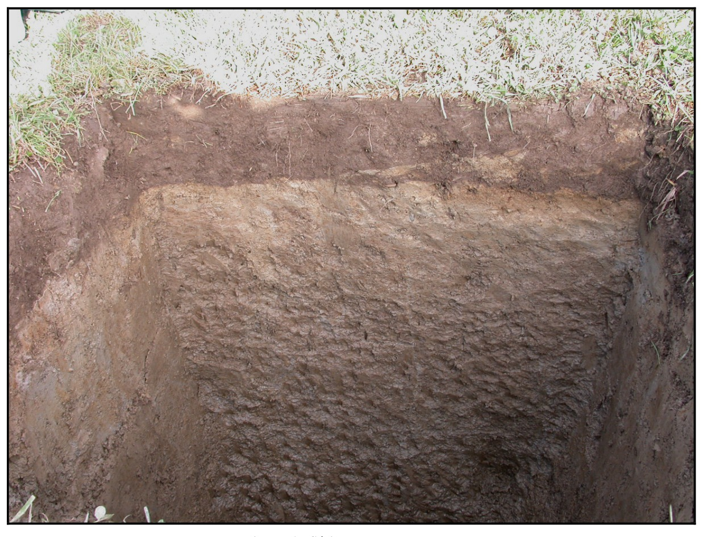

Identification & Caractéristiques Générales
La série Le Bras s'est développée sur des dépôts meubles fluvioglaciaires ou alluviaux terrassés, caractérisés par un matériau parental minéral à texture mixte. Géomorphologiquement, ces sols occupent les positions topographiques de terrasses, de berges et de vallées encaissées au sein des paysages physiographiques façonnés par les dynamiques quaternaires régionales. La topographie associée est généralement plane à modérément inclinée, englobant des pentes faibles favorisant un cheminement latéral restreint des eaux de surface.
Le profil pédologique montre une différenciation texturale marquée, associant un horizon de surface à texture de loam sableux à un sous-sol (substratum) de loam argileux plus lourd et compact. Le régime hydrologique est caractérisé par un drainage naturel imparfait, conditionné par la baisse graduelle de perméabilité en profondeur induite par la transition vers les textures argileuses. La réaction du sol est acide dans les horizons supérieurs, nécessitant un suivi régulier du pH. La structure du profil et la compacité relative du sous-sol limitent la vitesse d'infiltration verticale, entraînant l'apparition temporaire d'une nappe perchée printanière.
Sur le plan agronomique, les sols de la série Le Bras possèdent un excellent potentiel pour la production de grandes cultures et les systèmes prairiaux liés à l'industrie laitière, sous réserve de la mise en place de correctifs techniques. Les principales contraintes à la mise en valeur agricole résident dans l'excès hydrique temporaire et la vulnérabilité à l'érosion hydrique sur les pentes des berges. L'optimisation de leur productivité requiert l'installation d'un réseau de drainage souterrain (tuyauterie), des interventions régulières de chaulage pour neutraliser l'acidité, ainsi que l'application de pratiques de conservation des sols pour limiter le ruissellement et le ravinement.
Caractères Distinctifs & Morphologie Génétique (Comté de Dorchester — Page 24)
- Topographie : légèrement déprimée
- Drainage : imparfait
- Pierrosité : nulle — 0
- Grand-groupe génétique : gleysol
- Degré d'érosion : ravinement superficiel et occasionnel (E1)
- Classes d'utilisation : (C) 2W (Q) 2d
- Association géographique : série Neubois
- Végétation naturelle : épinettes noires, cèdres, ormes blancs
Classification Taxonomique & Environnement Pédologique
| Ordre Pédologique | Gleysolique |
|---|---|
| Grand Groupe (SCSS) | Gleysol humique |
| Sous-Groupe Taxonomique | Gleysol humique orthique |
| Famille Pédologique | Loameuse-fine, mixte sableux, alcalin (calcaire) |
| Mode de Dépôt Parental | Lacustre |
| Classe de Drainage Naturel | Imparfaitement drainé |
| Régime Thermique & Humidité | Frais / Perhumide |
Description Morphologique du Profil Type
Séquence génétique des horizons pédologiques caractérisant le profil type représentatif de la série Le Bras :
Profil forestier / boisé — Comté de Dorchester
✓ Source : Comté de Dorchester — Page 24Couleur Munsell : 10YR 4/2
Structure & Consistance : Polyédrique à granulaire
Description morphologique : Loam sableux à loam légèrement humifère brun-gris foncé (10YR 4/2); friable, sans consistance; pH: 5.7.
Couleur Munsell : 2.5Y 4/4 (matrice), 10YR 5/8 (marbrures)
Structure & Consistance : Peu développée
Description morphologique : Loam sableux olive (2.5Y 4/4) avec mouchetures de couleur brun-jaune (10YR 5/8); structure peu développée; peu friable et peu perméable; pH: 6.4.
Couleur Munsell : 2.5Y 5/2 (matrice), 10YR 5/6 (marbrures)
Structure & Consistance : Massive
Description morphologique : Loam argileux brun-gris (2.5Y 5/2) avec mouchetures de couleur brun-jaune (10YR 5/6); structure massive; compact; pH: 7.7.
Profils Photographiques & Planches de Terrain
Documents iconographiques, figures pédologiques et coupes de terrain documentées dans les mémoires d'inventaire pour de la série Le Bras :


Propriétés Physico-Chimiques & Analyses de Laboratoire
| Horizon | Prof. limite | pH (H₂O) | M.O. % | C tot. % | N tot. % | C.E.C. (cmol/kg) | Sable % | Limon % | Argile % | P Meh3 (mg/kg) | K (cmol/kg) | Ca (cmol/kg) | MVA (g/cm³) |
|---|---|---|---|---|---|---|---|---|---|---|---|---|---|
| Ap1 | 17.0 cm | 6.31 | 5.45 | 3.16 | 0.23 | 19.5 | 36.3 | 37.3 | 26.4 | 116.2 | 0.21 | 9.95 | 1.32 |
| Ap2 | 32.0 cm | 6.39 | 4.53 | 2.63 | 0.18 | 17.4 | 36.0 | 37.4 | 26.5 | 74.9 | 0.16 | 8.31 | 1.36 |
| B | — | 6.53 | 1.85 | 1.07 | 0.08 | 13.6 | 28.4 | 42.9 | 28.8 | 24.2 | 0.14 | 5.67 | 1.68 |
Particularités Régionales, Phases & Variantes Pédologiques
Déclinaisons régionales, faciès texturaux, phases d'érosion ou de pierrosité et variantes cartographiées par étude pour de la série Le Bras :
| Étude Régionale | Symbole | Appellation / Phase / Variante | Différenciation avec la série type (Analyse pédologique) |
|---|---|---|---|
| Comté de Dorchester | Bs |
Le Bras loam sableux | Modalité modale de référence (type de base de la série). |
| Comté de Lotbinière | BS |
Le Bras | Conforme à la série type de référence (caractéristiques texturales et drainage identiques). |
| Bassin versant du Bras d'Henri | BS |
Le Bras | Conforme à la série type de référence (caractéristiques texturales et drainage identiques). |
BSb |
Le Bras pente de 3-8% | Phase de pente (3-8%) avec risque de ruissellement et d'érosion hydrique accrue. | |
| Étude pédologique du bassin vers | LBS |
Le Bras | Conforme à la série type de référence (caractéristiques texturales et drainage identiques). |
Distribution Pédo-Paysagère & Représentativité Cartographique (Couverture PPS 2026)
- Neubois loam sableux (NUB) — co-occurrente dans 118 polygone(s)
- Des Saults loam sableux très fin à loam (DSU) — co-occurrente dans 38 polygone(s)
- Des Orignaux loam à loam sableux (DGX) — co-occurrente dans 31 polygone(s)
Aptitudes Agronomiques, Hydropédologie & Conservation des Sols
Indicateurs Hydropédologiques & Vulnérabilité à l'Érosion (BDHP 2026)
Interprétation BDHP : Potentiel de ruissellement modérément élevé. Faible taux d'infiltration, présence d'horizons ralentissant le drainage descendant.
Classement selon l'Inventaire des Terres du Canada (ITC / CLI) : Classe 2w.
- Potentiel agricole : Terroir adapté aux cultures régionales selon la texture dominante et la régie de drainage.
- Contraintes majeures : Imparfaitement drainé. Risque d'engorgement temporaire ou d'excès d'eau printanier.
- Gestion & Aménagement : Drainage souterrain ou superficiel préconisé sur les terres planes. Chaulage et apport organique régulier selon les bilans agronomiques.
- Cultures adaptées : Grandes cultures (maïs, soya, céréales), prairies fourragères et cultures maraîchères selon le contexte géomorphologique.